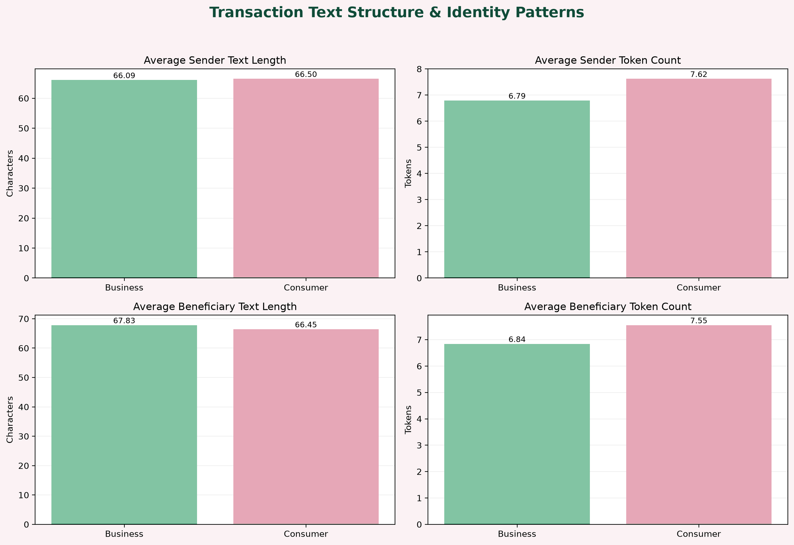

1. Text Structure & Token Analysis
Business is the baseline; charts compare Consumer text length and token count with Business records.

2. Identity & Shared Information Analysis
Percentage of transactions containing each token at least once, calculated within each column's party-type group. Sample sizes: Sender B 7,874,637; Sender C 2,125,363; Beneficiary B 2,881,550; Beneficiary C 7,118,450.
| Token | Sender B | Sender C | Beneficiary B | Beneficiary C |
|---|---|---|---|---|
| business | 85.38% | 0.00% | 85.83% | 0.00% |
| company_keyword | 26.31% | 0.00% | 26.55% | 0.00% |
| first_name | 0.00% | 57.13% | 0.00% | 57.95% |
| last_name | 0.00% | 86.10% | 0.00% | 86.39% |
| street | 69.53% | 70.25% | 72.33% | 72.37% |
| city | 64.81% | 68.83% | 66.14% | 67.46% |
| country_code | 60.52% | 62.06% | 60.79% | 61.19% |
| post_code | 42.76% | 45.79% | 44.40% | 45.80% |
| iban | 49.72% | 53.30% | 47.67% | 50.62% |
B = Business; C = Consumer.
3. Key Analytical Findings
Consumer records average 7.62 sender tokens and 7.55 beneficiary tokens, compared with 6.79 and 6.84 for Business records.
Consumer records frequently contain first_name and last_name, while Business records frequently contain business. company_keyword appears less frequently.
When first_name is present, last_name is also present in 92.01% of sender and 92.31% of beneficiary Consumer records.
3. Key Analytical Findings (continued)
Mean text length is about 66–68 characters across the four groups, despite differences in token composition.
IBAN markers occur in 0% of US, Singapore, and China BICs, versus about 92% for Germany. After country standardization, Business vs Consumer rates are 51.27% vs 50.81% for senders and 50.17% vs 50.16% for beneficiaries.
4. Reconstructed Business Rules & Patterns
Among sender records in this 10M-row dataset, Consumer descriptions average 7.62 tokens and Business descriptions 6.79 (0.83 fewer, about 10.9% below the Consumer baseline). This describes engineered text features, not identity quality.
Among Consumer records where first_name is present, last_name is also present in 92.01% of sender and 92.31% of beneficiary descriptions. The comparison is conditional on first_name being present.
The business token appears in 85.38% of Business sender descriptions, versus 0% of Consumer sender descriptions; company_keyword appears in 26.31% of Business senders. These are token flags, not verified legal identities.
BIC8 characters 5–6 encode ISO-2 country. Standardized within-country B/C rates (115 sender and 113 beneficiary countries; at least 1,000 records per type) differ by 0.47 pp and 0.01 pp. The marker is synthetic, not IBAN validation.
Typical text length remains similar across participant types, even when token counts differ. Business is the baseline comparison for the token-count charts.
5. Executive Analytical Brief
Question and hypothesis: Do Business and Consumer party descriptions have different engineered token patterns? The testable expectation is that Consumer records have more personal-name tokens and Business records have more business-related tokens.
Compared with the Business sender baseline (6.79 average tokens), Consumer sender descriptions average 7.62 tokens. Consumer records show first-name and last-name tokens, while Business records frequently contain the business token. These are patterns in the dataset's engineered text fields, not verified identity information.
Party type explains little of the IBAN-marker difference after standardizing for BIC country: the adjusted B/C gaps are only 0.47 percentage points for senders and 0.01 for beneficiaries. Country is the stronger observed driver. Average text length remains similar (about 66–68 characters); token rates do not establish identity completeness or quality.
6. Business Implications & Recommendations
Use identity-field structures appropriate to Business and Consumer records when designing data validation rules.
Monitor expected identity fields and co-occurrence patterns, while allowing legitimate incomplete records.
Use token composition and text-length distributions to identify unusual formatting or incomplete descriptions for further review.